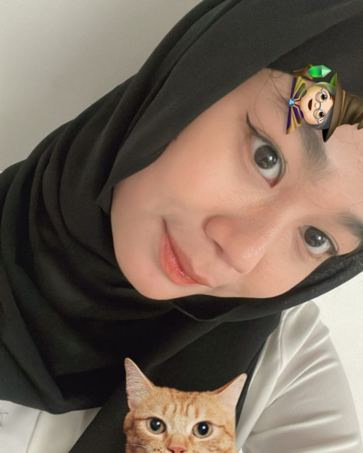

Analisis Rasio Keuangan Bank
Membandingkan kesehatan dua bank lewat rasio LDR, NPL, ROA, dan BOPO selama beberapa tahun, lengkap dengan kesimpulan dan rekomendasi.
Portfolio · 2026
Mahasiswi D3 Perbankan & Keuangan · UPNVJ · Semester 5
Merapikan angka, membangun kepercayaan. Saat ini magang di BCA dan menjadi relawan Fundraising & Partnership di AIR Alpha Indonesia, sambil terus mendalami operasional perbankan dan analisis keuangan.
Seret untuk memutar
Sudut rotasi: °

Aku Aliyah, mahasiswi D3 Perbankan dan Keuangan di Universitas Pembangunan Nasional Veteran Jakarta (UPNVJ). Saat ini aku di semester 5, magang di BCA untuk melihat langsung bagaimana layanan dan operasional perbankan berjalan, sekaligus menjadi relawan divisi Fundraising & Partnership di AIR Alpha Indonesia.
Aku suka pekerjaan yang menuntut ketelitian: membaca laporan keuangan, mencocokkan data transaksi, dan menjelaskan produk keuangan dengan bahasa yang mudah dipahami nasabah. Targetku adalah menjadi tenaga profesional perbankan yang cepat belajar, jujur, dan bisa diandalkan.
Menjelaskan produk tabungan, giro, dan deposito, membantu pembukaan rekening, serta menangani pertanyaan nasabah dengan ramah dan akurat.
Membaca neraca dan laba rugi, menghitung rasio likuiditas, profitabilitas, dan solvabilitas, lalu merangkumnya menjadi poin yang mudah dipahami.
Memeriksa kelengkapan dokumen, memantau jadwal angsuran, mencocokkan transaksi harian, dan menyusun laporan rapi di Excel.
Edukasi menabung, dana darurat, anggaran bulanan, dan pengenalan investasi dasar untuk mahasiswa dan pemula.
Memahami prinsip KYC, APU-PPT, dan kerahasiaan data nasabah sebagai dasar pekerjaan perbankan yang aman.
Menjalin komunikasi dengan calon donatur, sponsor, dan komunitas, serta mendukung penyusunan materi penggalangan dana untuk program relawan.
Membandingkan kesehatan dua bank lewat rasio LDR, NPL, ROA, dan BOPO selama beberapa tahun, lengkap dengan kesimpulan dan rekomendasi.
Lembar kerja yang mencocokkan transaksi secara otomatis dan menandai selisih, sehingga pengecekan harian lebih cepat dan minim salah hitung.
Simulasi anggaran bulanan, dana darurat, dan target tabungan yang dapat disesuaikan dengan penghasilan.
Seri infografis tentang menabung, mengenali pinjaman online ilegal, dan mengelola uang saku untuk mahasiswa.
Sisi lain di luar angka: kerja, jalan-jalan, dan hari-hari biasa. Ketuk foto untuk memperbesar.
Mendukung operasional harian, pencatatan dan administrasi dokumen, serta pelayanan nasabah di bawah bimbingan mentor.
Mendukung penggalangan dana dan membangun kemitraan dengan donatur, sponsor, dan komunitas untuk menunjang program relawan.
Saat ini semester 5. Mempelajari akuntansi, manajemen perbankan, kredit, dan analisis laporan keuangan.
Terbuka untuk peluang magang, kerja, dan kolaborasi di bidang perbankan dan keuangan.
WhatsApp +62 812-9598-7905